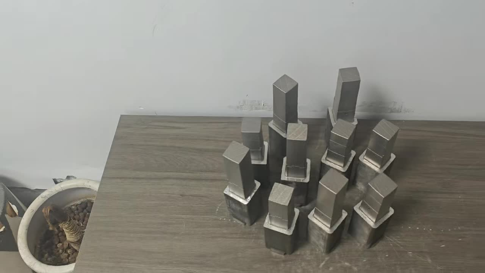
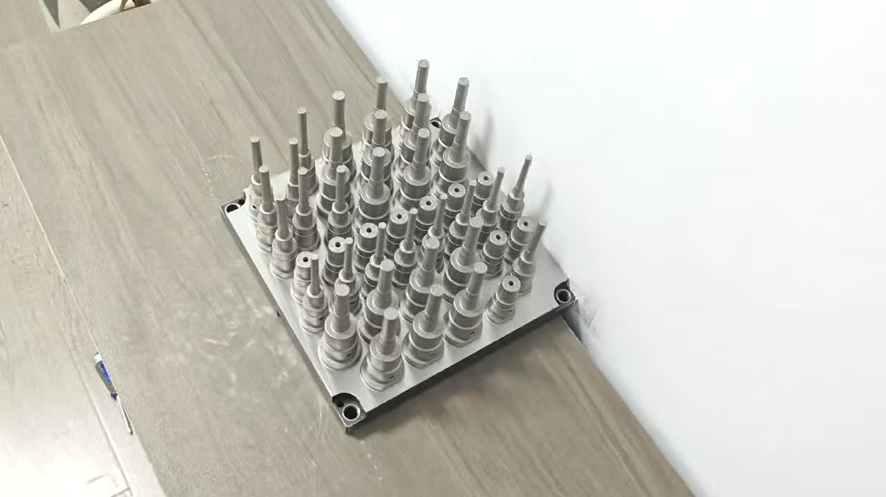

1. Why Powder Gets Trapped

LPBF printing uses metal powder (typically 15–45μm particle diameter for 420 stainless steel and 18Ni300 maraging steel) spread in thin layers (30–60μm) across the entire build platform. The laser selectively melts the powder into solid metal, but the surrounding unmelted powder remains in place — filling all voids, cavities, and channels within the part.
After printing:
- The bulk of loose powder (the "powder cake") is removed by depowdering — inverting the part and using compressed air and vibration to shake out powder from accessible openings
- However, fine powder adheres to channel walls due to:
- Electrostatic attraction — fine metal particles are charged during laser processing and electrostatically attracted to surfaces
- Micro-roughness — the printed channel surface has Ra 8–16μm (significantly rougher than machined surfaces), providing mechanical interlocking for powder particles
- Sintering necks — at channel edges, partial laser exposure creates partially sintered powder bridges that physically anchor powder to the wall
2. What Happens If You Don't Clean Properly
Metal powder (15–45μm steel particles) entering your cooling water circuit causes:
- Chiller filter clogging — most chiller units use 100–300μm mesh filters. Larger powder agglomerates will immediately clog these filters, reducing flow rate and triggering chiller alarms. Filter replacement cost: $50–200 per occurrence.
- Flow restrictor blockage — flow restrictors in the cooling circuit manifold (typically 0.8–2.0mm orifices) trap powder agglomerates. Requires manifold disassembly to clear.
- Pump seal wear — hard steel particles (420SS HRC 48–52) are abrasive. Particles passing through pump seals cause accelerated wear and premature pump failure.
- O-ring damage — powder particles trapped at O-ring seating surfaces cause leakage.
- Reduced cooling efficiency — partial blockages reduce flow rate below the design target Re > 10,000. Even 20% flow reduction can drop Reynolds number below turbulent threshold, dramatically reducing heat transfer coefficient.
- Contamination of cooling water circuit — steel particles circulate throughout the circuit (all molds on the same cooling loop) and accumulate at low-flow areas.
3. What Your Manufacturer Should Do Before Shipping

Any reputable conformal cooling insert manufacturer should perform the following cleaning steps as part of standard post-processing before the insert leaves the factory:
Step 1: Initial Depowdering (Immediately After Print)
The insert is removed from the powder bed and placed in a depowdering station. Compressed air at 4–6 bar is blown through the channel inlets while the insert is rotated in multiple orientations. Target: remove all free-flowing powder from the channel interior.
Time required: 15–45 minutes depending on channel complexity.
Step 2: Ultrasonic Cleaning Bath
The insert is submerged in an ultrasonic cleaning tank (40–80 kHz, water + mild alkaline cleaning agent, 50–60°C). Cavitation bubbles created by the ultrasonic transducers dislodge electrostatically-adhered powder from channel walls without mechanical contact.
- Minimum soak time: 30–60 minutes
- Coolant ports must be open during ultrasonic cleaning — both ends of each channel circuit
- Invert and rotate mid-cycle to dislodge settled powder
This step removes 80–90% of residual adhered powder that compressed air alone cannot dislodge.
Step 3: High-Velocity Water Flushing
High-pressure water (3–8 bar) is forced through each cooling circuit independently to flush dislodged powder out of the channels. Flush until the effluent runs clear — collect on white filter paper to verify no visible particles.
- Flush each circuit independently (do not flush multiple circuits in parallel — you want maximum velocity in each channel)
- Reverse flow direction mid-flush to dislodge powder trapped at corners and bends
- Minimum volume: 10× the internal channel volume per flush direction
Step 4: Repeat Ultrasonic + Flush (At Least 2–3 Cycles)
A single ultrasonic cleaning + flush cycle is not sufficient for complex channel geometries. Repeat the sequence at least twice more. Each cycle should show progressively cleaner effluent.
Step 5: Chemical Passivation (for Stainless Steel)
420 stainless steel and 18Ni300 maraging steel inserts should be passivated after cleaning to improve corrosion resistance of the freshly machined and printed surfaces. Standard passivation: citric acid bath (10–20% solution, 60°C, 30 minutes) or nitric acid passivation (ASTM A967). This also removes surface iron contamination from the printing process that could otherwise rust in service.
Step 6: Flow Rate Verification
The final quality check: measure actual flow rate through each circuit at a specified pressure differential (typically 1.0 bar or 2.0 bar). Compare to the engineered design flow rate. Acceptable tolerance: ±10% of design target.
If actual flow is >10% below design target, there is a blockage — do not ship until resolved.
Step 7: Hydrostatic Pressure Test
Pressurize all cooling circuits to 200 bar with water and hold for 5 minutes. No pressure drop (>5%) or visible leakage is acceptable. This confirms structural integrity and detects any micro-cracks or porosity in the channel walls.
4. Incoming Inspection: What to Check When You Receive an Insert
Even with a good supplier, perform incoming inspection before installing any conformal cooling insert:
Visual Inspection
- Inspect channel inlet and outlet openings with a flashlight — no visible powder accumulation at the opening
- Blow low-pressure compressed air through each circuit — air should flow freely with no resistance
- Collect exhaust air on white filter paper — no visible metallic particles
Flow Rate Test
Connect each circuit to a water supply at a known pressure (your shop's cooling water supply pressure, typically 3–6 bar). Measure flow rate with an inline flow meter. Compare to the design flow rate on your insert drawing. If actual flow is >15% below design target, the insert may have a partial blockage that requires additional cleaning before installation.
White Filter Paper Test
Place white filter paper (or a white cloth) at the outlet of each circuit. Flow water through for 60 seconds at normal operating pressure. The filter paper should show no metallic gray staining after this flush. If gray staining is present, the insert needs additional cleaning per the protocol in Section 5.
5. Field Cleaning Protocol (If You Received a Poorly Cleaned Insert)
If incoming inspection reveals powder contamination, clean the insert before installation using this protocol:
Equipment Needed
- Ultrasonic cleaner (≥10 liter tank, 40–80 kHz) — available from $200–800 for industrial units
- Alkaline cleaning solution (proprietary or sodium carbonate/surfactant mixture, 2–5% in water)
- Pressure washer or high-pressure flush pump (≥5 bar)
- White filter paper or fine-mesh screen for effluent testing
- Compressed air supply (5–8 bar)
Field Cleaning Procedure
- Initial compressed air blow-out — 5 bar compressed air through each circuit, both directions, 5 minutes each
- Ultrasonic bath, Cycle 1 — submerge in 60°C cleaning solution, 45 minutes, both circuit ports open
- High-pressure flush, Cycle 1 — 5+ bar water through each circuit, collect effluent on filter paper
- Ultrasonic bath, Cycle 2 — 30 minutes
- High-pressure flush, Cycle 2 — flush until effluent runs clear on filter paper
- Rinse with clean water — flush with clean tap water or deionized water to remove cleaning agent residue
- Dry — compressed air blow-dry all channels, then oven dry at 80°C for 30 minutes to prevent rust
- Flow rate retest — verify flow rate matches design before installation
6. Ongoing Maintenance: Keeping Lines Clean in Service
After installation, conformal cooling channels require periodic maintenance to prevent scale buildup and corrosion:
Coolant Water Specification
- Use treated cooling water (corrosion inhibitor + biocide + anti-scale agent) — not plain tap water
- Recommended: BASF Glysantin, Clariant Antifrogen, or equivalent corrosion inhibitor at 5–15% concentration
- pH target: 7.0–8.5 (check monthly)
- Total hardness: <150 ppm (harder water deposits scale faster in narrow channels)
- Iron content: <2 ppm (excess iron indicates corrosion somewhere in circuit)
Periodic Cleaning Schedule
| Interval | Action |
|---|---|
| Monthly | Check coolant chemistry (pH, inhibitor concentration, iron content) |
| Quarterly | Flow rate check — compare to initial baseline. >10% reduction = partial blockage forming |
| Annually | Drain, flush with 10% citric acid solution, re-flush with clean water, check for scale deposits |
| Every mold rework | Full cleaning protocol (Section 5) before re-commissioning |
Signs of Scale or Blockage in Service
- Cycle time creeping up over weeks/months — often the first sign of reduced cooling effectiveness
- Mold temperature controller showing increasing outlet-inlet ΔT at the same flow rate — reduced flow through channels
- Hot spots reappearing (warpage or sink marks in previously corrected areas) — indicates partial blockage in the channel serving that zone
- Chiller working harder (longer ON cycle) to maintain target mold temperature — reduced heat transfer efficiency
7. What We Do at MouldNova
Every conformal cooling insert we ship undergoes the full 7-step post-processing protocol described in Section 3. The cleaning and verification records are part of our QC documentation:
- 3× ultrasonic cleaning cycles — 420 Stainless Steel: 45 + 30 + 20 minutes; 18Ni300: 60 + 30 + 20 minutes
- High-pressure flush after each cycle — effluent collected on white filter paper, photographed, retained in QC record
- Citric acid passivation — standard for all stainless steel inserts
- Flow rate measurement — recorded on flow certificate with design target and actual measurement
- Hydrostatic test at 200 bar, 5 minutes — test certificate provided with shipment
These documents are included with every shipment. If you ever receive an insert from any supplier without these documents, treat the insert as unverified and perform incoming inspection before installation.
Order Pre-Cleaned, Pre-Tested Conformal Cooling Inserts
Every MouldNova insert ships with flow rate certificate and hydrostatic pressure test documentation — verified clean and ready to install. Send your drawing for a 24-hour quote.
View Conformal Cooling Service → WhatsApp Now